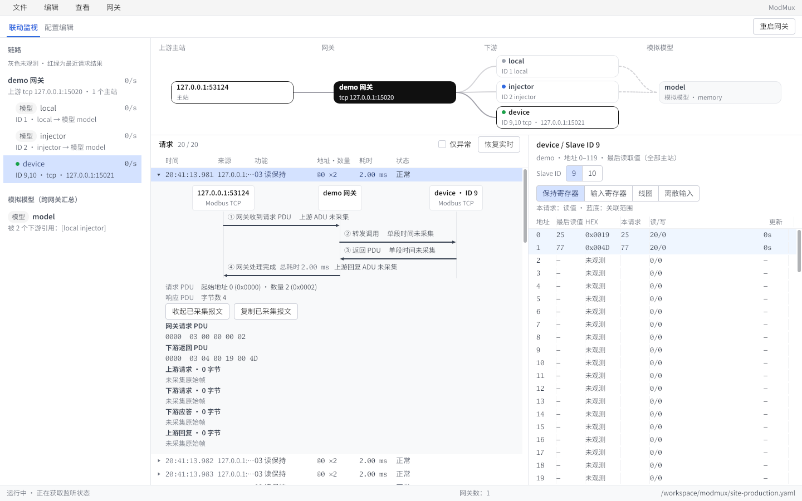
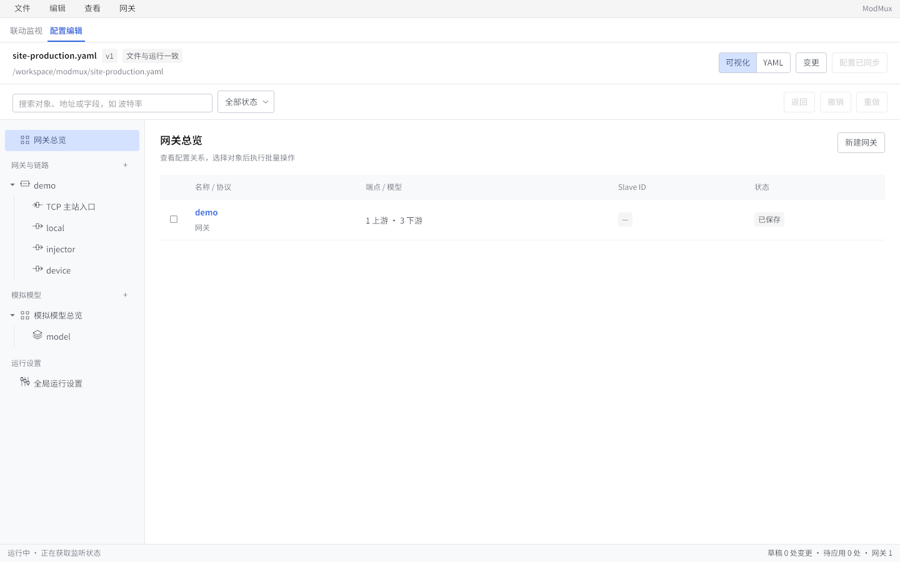

Windows
解压后双击启动
安装说明协议转换与路由，在一个原生工作台中。配置网关、查看连接，联动检查请求、PDU 与寄存器。
Windows · Linux · macOS / v0.6.0 预览版

原生桌面软件与 CLI 分开提供。两者使用同一套网关内核与配置规则。
选择 amd64 或 arm64 的 zip 包，解压后启动 modmux-desktop.exe。发布包尚未做 Authenticode 签名。
选择对应架构的 tar.gz 包，解压后运行 ./install.sh 安装桌面入口。系统需提供 EGL、Wayland / X11 与 xkbcommon 等运行库。
Apple Silicon 选择 arm64，Intel 选择 amd64。解压并将 ModMux.app 拖入应用程序。当前包为 ad-hoc 签名，未经公证；首次打开可能被 Gatekeeper 拦截。
选中请求，检查它的 PDU，并关联最近成功读取的寄存器值。

可视化编辑与 YAML 共用配置；保存后重启网关应用更改。
按网关、下游和 Slave ID 理解连接关系。
选择请求，检查 PDU 与已观测的寄存器读值。
编辑协议、路由和模型，保留 YAML 工作流。
桌面端适合配置和调试；CLI 与 Docker 适合服务部署与自动化。三种协议、共享模型和 YAML 配置规则保持一致。